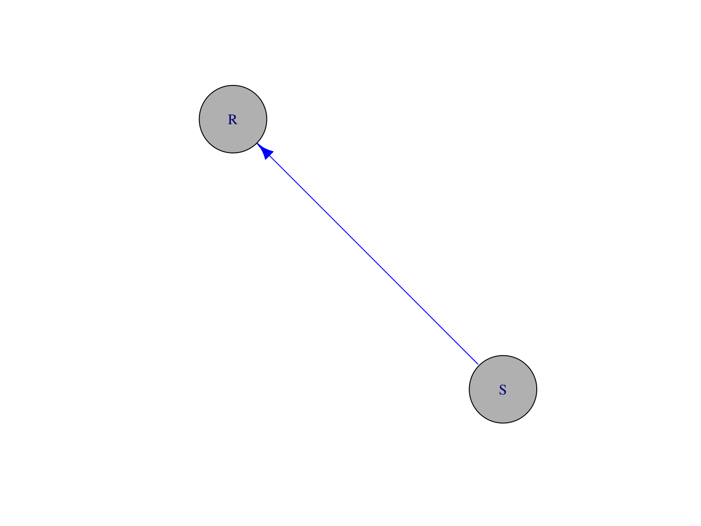

Investing wisely & well in the future of cognitive science
Rick O. Gilmore
2019-05-23 13:53:20
Preliminaries


Overview
- Psychology is the hardest science
- Four realms and their interactions
- You say you want a revolution
- We all want to change the world
- How to spend wisely & well
Psychology is the hardest science


But why?

_-_Google_Art_Project.jpg#/media/File:Pieter_Bruegel_the_Elder_-_The_Tower_of_Babel_(Vienna)_-_Google_Art_Project.jpg)

Oh give me a ’ome…
- Genome
- Proteome
- Metabolome
- Connectome
- Behaviorome?
“Behavior is the linchpin of the most vexing problems in public health, and a better understanding of behavior is fundamental to achieving positive health outcomes, from prenatal development throughout adulthood.”
“Behavior contributes to the progression or prevention of disease, defines a disorder or marks recovery, and provides mechanisms for therapeutic intervention.”
4 realms and their interactions

| Realm | Domain |
|---|---|
| \(W\) | The world |
| \(B\) | The body |
| \(N\) | The nervous system |
| \(M\) | The mind |
Nested causality
- Mind (\(M\)) within nervous system (\(N\))
- Nervous system (\(N\)) within body (\(N\))
- Body (\(B\)) within world (\(W\))
Mutual coupling of dynamic states
\(\dot{M} = f(M,N)\)
\(\dot{N} = f(N,B)\)
\(\dot{B} = f(B,N,W)\)
\(\dot{W} = f(W,B)\)
Measure
- \(W\), \(B\), \(N\) directly
- At varied spatial & temporal scales

Measure
- \(M\) indirectly
- Only via \(N\), \(B\)
\(M\) highly salient, but…


By Krauss - Own work, CC BY-SA 4.0, Link
“How should an experimenter proceed when faced with a black box?”
Ashby, 1956/2015, 6/2

“What properties of the Box’s contents are discoverable and what are fundamentally not discoverable?”
Ashby, 1956/2015, 6/2
“What methods should be used if the Box is to be investigated efficiently?”
Ashby, 1956/2015, 6/2
“The primary data of any investigation of a Black Box consists of a sequence of values of the vector with two components: (input state, output state).”
Ashby, 1956/2015, 6/5
“…all fundamental knowledge obtainable from a Black Box…is such as can be obtained by re-coding the protocol [sequence of input/output measurements].”
Ashby, 1956/2015, 6/5
“The theory of the Black Box is simply the study of the relations between the experimenter and his environment, when special attention is given to the flow of information.”
Ashby, 1956/2015, 6/18
You say you want a revolution…

B.F. Skinner
\(S \rightarrow R\) psychology
- \(S\) (stimulus) -> \(R\) (response)
- \(S\) and \(R\) observable

- \(S\) is the effect of some \(W_i\) on \(B\)
- \(R\) is some change in \(B\) (\(\dot{B_i}\)) that is observable in \(W\)

Noam Chomsky
\(S \rightarrow C \rightarrow R\)
- \(S\) (stimulus) -> \(C\) (cognition/computation) -> \(R\) (response)
- \(C\) inferred from structure in \(S\)->\(R\)
- \(C\) elaborate, probably innate
- \(S\) alone insufficient to explain \(C\), especially language (Chomsky, 1959)
The cognitive ‘revolution’
- \(C\) (\(M\)) viewed in algorithmic terms
- Formal operations on information structures
- Developed in parallel with computer science, AI

Michael Gazzaniga
The cognitive (neuroscience) ‘revolution’
- Developed alongside cognitive science
- \(C (M) \leftrightarrow N\)
- What \(N_i\) compute functions of \(C (M)\)?
- Assume 1:1 relationship between \(N\) and \(C (M)\)


The problem with revolutions…

Linear/open-loop causal chains
- \(S \rightarrow R\)
- \(S \rightarrow C \rightarrow R\)
vs. closed-loop causal chains

Actions/responses (\(R\)) affect the World (\(W\)) \(W\) states induce sensations (\(S\)) \(S\) affect \(C\) (computations/cognitions) \(C\) affect \(A\)
…
Consequences…
- Properties of \(W\) downplayed, ignored
- Why are \(S\) or \(C\) causal but not \(R\)?
- Variability in behavior \(R\) only noise
- Origins of \(R\), \(C\), \(A\)?
- \(W \leftrightarrow B \leftrightarrow N\) reflect ontogenetic and phylogenetic history

In fact, human cognition is…
A dynamic and multi-scale system

Our (essential) open science future
Is there a reproducibility crisis in science?
- Yes, a significant crisis
- Yes, a slight crisis
- No crisis
- Don’t know
 (
(Have you failed to reproduce an experiment from your lab or someone else’s?
 (
(Why this matters
“The advancement of detailed and diverse knowledge about the development of the world’s children is essential for improving the health and well-being of humanity…”
“We regard scientific integrity, transparency, and openness as essential for the conduct of research and its application to practice and policy…”
https://www.srcd.org/about-us/policy-scientific-integrity-transparency-and-openness
Open science will accelerate discovery
- Open sharing of materials, analysis code, & data
- Causal/dynamic models in discoverable formats
- Video + physio + other temporally dense time series?
- Databrary.org
Take homes

| Algorithms | Dynamics |
|---|---|
| for x in range(0, n): | \(\dot{x}=f(x,a)\) |
Different ways to characterize Black Boxes


How to spend wisely & well
Support research that
- studies behavior (& internal states)
- samples densely (and/or broadly) in time & space
- creates meaningful linkages across levels of analysis
- connects between & among systems
- exploits knowledge about nested feedback loops
- moves beyond qualitative micro-theories
- provides specifics about theorized algorithms or dynamics
- shares procedures, materials, code, & data openly

Thank you
rogilmore@psu.edu https://gilmore-lab.github.io https://gilmore-lab.github.io/2019-03-25-cne/ @rogilmore
Materials
This talk was produced on 2019-05-23 in RStudio version using R Markdown and the reveal.JS framework. The code and materials used to generate the slides may be found at https://github.com/gilmore-lab/2019-06-03-McDonnell-Fdn/. Information about the R Session that produced the code is as follows:
## R version 3.5.2 (2018-12-20)
## Platform: x86_64-apple-darwin15.6.0 (64-bit)
## Running under: macOS Mojave 10.14.5
##
## Matrix products: default
## BLAS: /System/Library/Frameworks/Accelerate.framework/Versions/A/Frameworks/vecLib.framework/Versions/A/libBLAS.dylib
## LAPACK: /Library/Frameworks/R.framework/Versions/3.5/Resources/lib/libRlapack.dylib
##
## locale:
## [1] en_US.UTF-8/en_US.UTF-8/en_US.UTF-8/C/en_US.UTF-8/en_US.UTF-8
##
## attached base packages:
## [1] stats graphics grDevices utils datasets methods base
##
## other attached packages:
## [1] igraph_1.2.2 forcats_0.3.0
## [3] stringr_1.4.0 dplyr_0.8.0.1
## [5] purrr_0.3.2 readr_1.3.1
## [7] tidyr_0.8.2 tibble_2.1.1
## [9] ggplot2_3.1.0 tidyverse_1.2.1
## [11] databraryapi_0.1.6.9001
##
## loaded via a namespace (and not attached):
## [1] Rcpp_1.0.1 cellranger_1.1.0 plyr_1.8.4 pillar_1.3.1
## [5] compiler_3.5.2 tools_3.5.2 digest_0.6.18 jsonlite_1.6
## [9] lubridate_1.7.4 evaluate_0.13 nlme_3.1-137 gtable_0.3.0
## [13] lattice_0.20-38 pkgconfig_2.0.2 rlang_0.3.3 cli_1.1.0
## [17] rstudioapi_0.10 yaml_2.2.0 haven_2.0.0 xfun_0.6
## [21] withr_2.1.2 xml2_1.2.0 httr_1.4.0 knitr_1.22
## [25] hms_0.4.2 generics_0.0.2 revealjs_0.9 grid_3.5.2
## [29] tidyselect_0.2.5 glue_1.3.1 R6_2.4.0 readxl_1.2.0
## [33] rmarkdown_1.12 modelr_0.1.2 magrittr_1.5 backports_1.1.3
## [37] scales_1.0.0 htmltools_0.3.6 rvest_0.3.2 rsconnect_0.8.13
## [41] assertthat_0.2.1 colorspace_1.4-1 stringi_1.4.3 lazyeval_0.2.2
## [45] munsell_0.5.0 broom_0.5.1 crayon_1.3.4